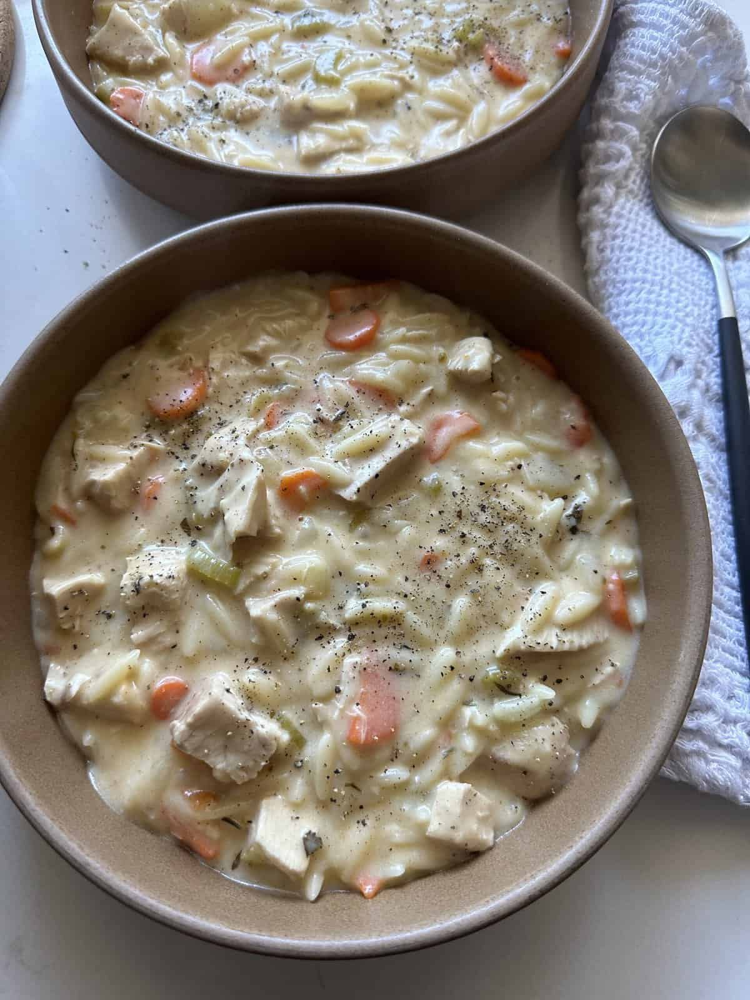

Home
Cream of Turkey Soup

Description
Cream of turkey soup is the kind of quiet,
restorative dish that feels designed for
cold afternoons and leftover ingenuity. Built
on a gentle base of turkey stock enriched with cream,
it carries a soft savoriness that’s deeper than chicken
but still comforting and familiar. Tender pieces of turkey
melt into the soup alongside onions, celery, and carrots, their sweetness rounding out the richness without overwhelming it. Herbs
like thyme and bay leaf linger in the background, giving the soup a slow, home-cooked warmth. It’s not flashy food—it’s patient food—meant to be eaten slowly, spoon by spoon, the kind of soup that turns scraps into something generous and grounding.
Ingredients
- 1/4 cup butter or olive oil
- 1 small sweet onion, diced
- 4 celery stalks, diced
- 2 medium large carrots, diced
- 3 cloves garlic, minced
- 1/4 cup flour
- 5 cups low sodium turkey or chicken broth
- 2 cups milk, or half + half
- 1 cup dry orzo
- 3/4 tsp paprika
- 1/8 tsp cayenne pepper (optional)
- 1-2 tsp Italian herb blend
- salt and pepper, to taste
- 4 cups leftover turkey, chopped
Steps
- In a large pot, melt your butter on medium head and saute the onions, carrots, celery until softened, but not browned. Stir in the garlic for 30 seconds.
- Sprinkle over the flour and mix well to form a paste.
- Gradually add in 2 cups of the broth and milk, while stirring constantly so the mixture stays thick. Add in the remaining 3 cups broth, orzo, seasonings and turkey pieces. Bring back to a boil then reduce the heat to a simmer. Half cover the pot allow to cook for another 10 mintues (stirring occasionally), or until the pasta is cooked al dente.